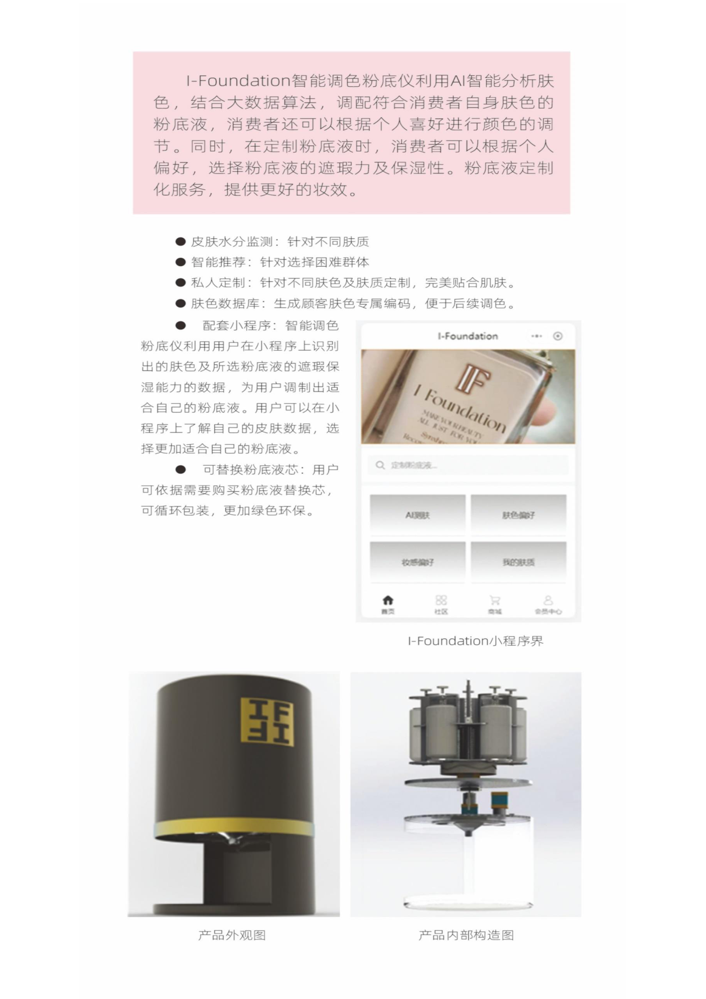

AI BEAUTY · SMART HARDWARE · PERSONALIZATION
02 / FLAGSHIP PRODUCT CASE
I-FOUNDATIONAI 定制粉底系统
每个人的肤色、肤质和妆感偏好都不同，标准色号却只有有限几种。I-Foundation 让用户先被准确识别，再由算法生成配方、设备现场调配，完成从“反复试错”到“一次适配”的体验升级。
AI CUSTOM FOUNDATION SYSTEM
你不是在挑一个色号，而是在获得一套适配方案。
对用户来说，最难的不是买一瓶粉底，而是在标准色号里找到真正适合自己的那一瓶。I-Foundation 从肤色、肤质和妆感偏好出发，通过视觉识别与色彩模型生成专属配方，再由智能设备现场定量调配，让“试错式购买”变成“被理解后的定制服务”。
01 / THE USER PROBLEM
色号不是选择题，
而是适配问题。
8,277 VALID RESPONSES / PROJECT SURVEY
经常遇到粉底液与肤色不匹配
认为个人挑选效率低、耗时多
担忧个人调配过程中的卫生问题
愿意或考虑自己调制适配肤色的粉底液
02 / THE PRODUCT LOOP
把一次试色，
做成一条服务链。
FROM VISUAL INPUT TO CUSTOM OUTPUT
- 01采集
通过面部识别与问卷获取肤色、肤质和妆感偏好。
- 02分析
将视觉特征与粉底液色彩、遮瑕和保湿数据进行匹配。
- 03配色
算法计算比例，蓝牙把配方传递给智能调色仪。
- 04定制
定量出料、搅拌与消毒，现场完成专属粉底液。
03 / PRODUCT + SYSTEM
看得见的设备，
看不见的系统。
COMPUTER VISION · COLOR MODEL · CONTROL

SYSTEM LOGIC / HOW IT WORKS
系统把用户端的肤色与偏好输入，转译为设备端可执行的出料参数，再通过反馈完成一次可复现的定制。
- 01视觉识别肤色、肤质与场景偏好
- 02色彩模型HSV / RGB 参数转换与配比
- 03定量控制步进电机与流量传感器
- 04安全闭环搅拌、提示与紫外线消毒
04 / BUSINESS MODEL
从一次定制，
走向持续复购。
OFFLINE EXPERIENCE → DIGITAL MEMORY
用智能设备降低试色与沟通成本，创造可感知的科技体验。
根据个人数据生成配方，完成专属粉底液的小样或成品。
为用户生成肤色编码与使用记录，减少下一次选择成本。
从一次线下服务延伸到线上下单、知识分享与持续服务。
MY CONTRIBUTION
我把一个技术设想，
整理成可被理解的产品。
- 把用户调研转译成明确的产品痛点与价值主张
- 搭建“设备 + 小程序 + 门店服务”的产品架构
- 完成市场、竞品、商业模式与路演叙事的组织